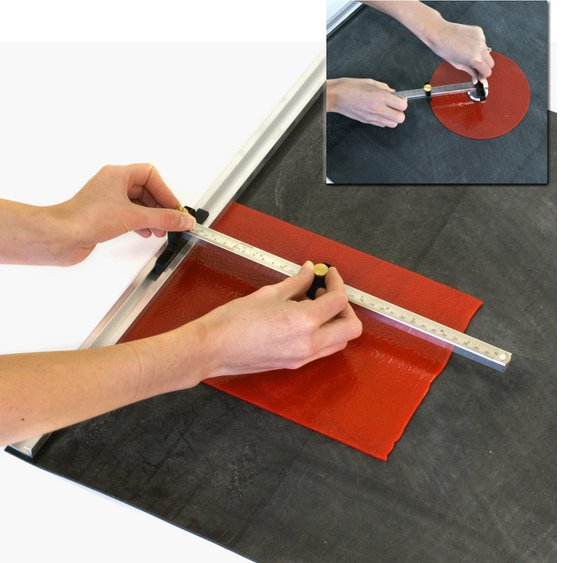
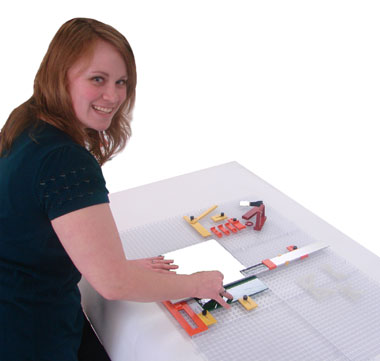
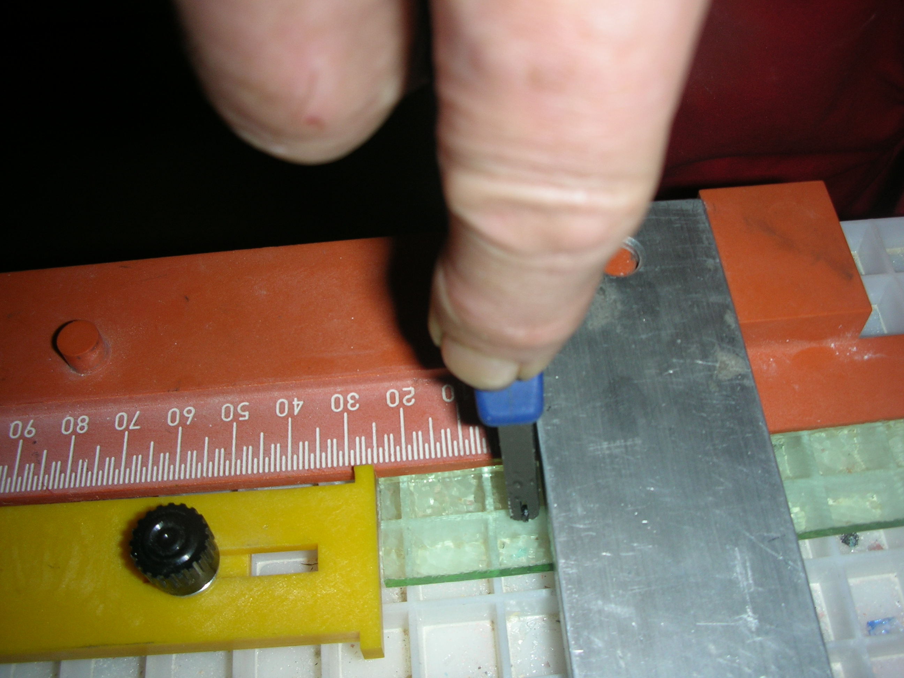

Lasinleikkauksen välineitäLasiveitsistä on oma lukunsa. Sen lisäksi on erilaisia leikkaussysteemejä, joilla saa tarkemmin mittatarkkoja liuskoja tai kulmia. Tosin viivotin, suorakulma, astelevy ja pinkka sanomalehteä alustaksi on ihan toimiva ratkaisu ja opettaa tarkempaan työskentelyyn.Silberschnitt'illä on rullalle käärittävä kumimatto jonka toisessa reunassa on alumiinikisko ohjaimena. Olen käyttänyt sitä juuri rullattavuuden vuoksi kursseilla. Kiinteässä käytössä sen tarkkuus paranee huomattavasti jos kumimaton liimaa kontaktiliimalla vaikka lastulevyyn. Pelkään mattoon kiinitettynä tuo alumiiniohjain pääsee elämään hiukan. Se on näppärä vehje kun tarvitsee paljon samanlevyisiä liuskoja. Siihen saa myös erillisen lisävarusteen, jolla voi asetella kulmia. Silberscnhnitin alustaan kuuluu myös jonkinlainen harppitoiminta joka olisi ihan kelvollinen jos keskipiste pysyisi paikoillaan. Pala kaksipuolista teippiä ratkaisi ongelman. Kuvan harppi on erillinen laite. Aivan kapeita liuskoja on Silberschnittillä vaikea leikata. Olen käyttänyt ohjauskiskon vieressä n.10 cm muovisuikaletta, jolloin leikkauskohta siirtyy kauemmaksi ohjauksesta. Vasemmalla kädellä kuljetan ohjainta ja oikella leikkuupäätä. Mortonilla on oma leikkaussysteeminsä. Siinä on muovialusta, jossa on pieniä lokeroita. lasinsirut putoavat niihin eikä alustaa tarvitse harjata joka välissä. Mortoninkin lisävarusteina saa viivottimen, erilaisia ohjaimia jne, mutta systeemi vaatii aika paljon opettelua ennenkuin käyttö on sujuvaa. Sillä pääsee kuitenkin hyvin suureen tarkkuuteen ja toistettavuuteen, joten tuotannollisemmassa työssä puolustaa hyvin paikkaansa. Mortonin yksi kivapuoli on se, että nurinpäin käännettynä siitä saa valopöydän. Varsinaisen leikkaussysteemin lisäksi Mortonilla on aukaisupihtiä vastaava työkalu M-80 jota on kehuttu erittäin käteväksi. |
 Kuva1.Silberschnitt leikkausalusta Kuva2.Silberschnitt harppi  Kuva 3.Morton leikkaussysteemi foto Delphiglass.com  Kuva4.Mortom leikkaussysteemi |
{kind=link}